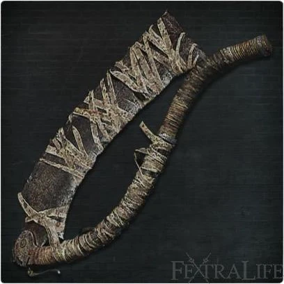
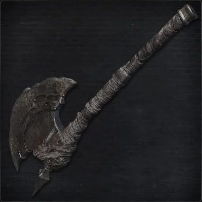
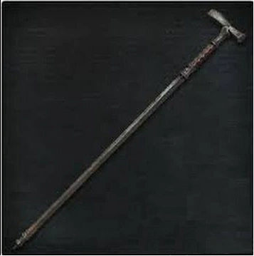

A Cidade de Yharnam
Você acorda em uma maca em uma clínica misteriosa. Seu sangue foi contaminado e agora você está preso ao Sonho do Caçador. Seu objetivo é explorar as ruas de uma cidade gótica amaldiçoada e sobreviver à noite mais longa da sua vida.
Yharnam já foi uma metrópole gloriosa, famosa por suas milagrosas curas medicinais baseadas no uso do sangue. No entanto, uma terrível praga endêmica se espalhou, transformando quase todos os seus habitantes em feras grotescas e violentas.

Como um caçador estrangeiro, restam apenas duas opções: dominar o combate brutal ou se tornar mais uma vítima da noite.
Os Mistérios da Lore: O Sangue Antigo
A história de Bloodborne não é contada de forma direta. Ela está escondida nas descrições de itens, cenários e diálogos enigmáticos. Para entender a queda de Yharnam, precisamos olhar para o passado.
A Igreja da Cura e o Sangue Milagroso
Tudo começou quando eruditos da instituição de ensino Byrgenwerth descobriram um sangue antigo e misterioso nas profundezas das tumbas subterrâneas (os Cálices). Esse sangue tinha o poder de curar qualquer doença.
Um homem chamado Laurence traiu seu mestre e fundou a Igreja da Cura, espalhando o consumo desse sangue por toda Yharnam. O que eles não sabiam é que o uso excessivo desse elemento cobraria um preço terrível.
A Praga das Feras
O sangue milagroso corrompeu o corpo dos cidadãos. Gradualmente, aqueles que consumiram o sangue começaram a se transformar em monstros peludos, garras afiadas e criaturas gigantescas. Ironicamente, os membros de alto escalão da própria Igreja se tornaram as piores feras de todas.
Os Grandes (Great Ones)
Por trás de toda a praga e do sangue, existem entidades cósmicas divinas conhecidas como os Grandes. Eles operam em dimensões além da compreensão humana. O Sonho do Caçador no qual você está preso é, na verdade, a criação de uma dessas entidades: a Presença da Lua.
O Sonho do Caçador e a Oficina Inicial
Quando as feras começaram a dominar as ruas, a Igreja da Cura percebeu que precisava de guerreiros especializados para conter o caos secretamente. Foi então que surgiu a primeira geração de caçadores, liderados por Gehrman, o Primeiro Caçador.
Gehrman criou técnicas de combate ágeis e armas transformáveis (como as que você escolhe no início). No entanto, o avanço da praga foi implacável, e a antiga oficina acabou sendo abandonada após tragédias terríveis provocadas pelo consumo do sangue corrompido.
O Pacto e a Boneca Animada
Desesperado e isolado em uma cadeira de rodas, Gehrman fez um pacto com uma entidade cósmica: a Presença da Lua. Essa criatura criou uma dimensão alternativa chamada Sonho do Caçador, uma espécie de santuário que serve de refúgio para caçadores escolhidos como você.
Nesse sonho, Gehrman atua como um guia misterioso e preso ao local. Ao seu lado, há uma Boneca de porcelana em tamanho real que ganhou vida. Ela é o único porto seguro do jogador, demonstrando empatia genuína e canalizando os ecos de sangue que você coleta para fortalecer seus atributos.
A Caçada Sem Fim
Toda vez que você morre nas ruas góticas de Yharnam, você não desaparece; sua consciência simplesmente acorda de volta no Sonho. Você se tornou um caçador imortal, amarrado a este ciclo até que consiga cumprir o seu contrato: desvendar a origem do pesadelo e pôr fim à noite da caçada.
O Fim da Noite: Os Três Destinos
Conforme o amanhecer se aproxima, a caçada chega ao seu fim e o jogador se depara com uma escolha crucial oferecida por Gehrman sob a grande árvore do Sonho.
Dependendo das suas ações e dos segredos que você descobriu em Yharnam, a história pode terminar de três formas: você pode aceitar a libertação e acordar no mundo real esquecendo o pesadelo, substituir Gehrman tornando-se o novo prisioneiro do Sonho, ou transcender a humanidade, derrotando a própria Presença da Lua para se transformar no próximo Grande.
Escolha sua Arma Inicial
No início do jogo, ao visitar o Sonho do Caçador pela primeira vez, você receberá o direito de escolher uma das três armas de truque criadas pela Oficina. Cada uma dita um estilo de jogo diferente:
-
Cutelo-Serra (Saw Cleaver):
A arma mais icônica do jogo. Ela é equilibrada, rápida e causa dano extra do tipo Serrilhado, que destrói feras comuns muito mais rápido. É a escolha ideal para iniciantes.

-
Machado de Caçador (Hunter Axe):
Focado em força e controle de grupo. Quando transformado, ele se torna uma alabarda longa capaz de derrubar vários inimigos de uma vez com o seu famoso ataque carregado giratório.

-
Bengala-Chicote (Threaded Cane):
A opção mais elegante e ágil. No modo normal, funciona como uma espada rápida; no modo transformado, vira um chicote segmentado com longo alcance, ideal para caçadores focados em destreza.
